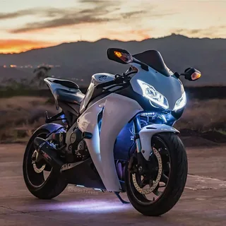

Honda fireblade
На протяжении долгих лет производитель занимался улучшениями хонды сбр 600 рр, касающихся различных характеристик. К примеру, последнее поколение этой модели стало легче почти на 10 кг, получив звание самых лёгких спортивных мотоциклов. Изменения также коснулись размеров двигателя, расположения коленчатого вала и валов коробки передач. Внешность хонды сбр 600 рр, отзывами о которой изобилуют многие интернет-ресурсы, также претерпела ряд модификаций – кузов мотоцикла стал намного легче, а дизайн в целом значительно улучшился. Также стоит отметить появление ABS на хонде cbr 600 rr, что положительно сказалось на управляемости в различных дорожных условиях.
Kawasaki Ninja H2
Мотоцикл класса "supercharged supersport" из серии спортивных мотоциклов Ninja производства Kawasaki, оснащенный центробежным нагнетателем с регулируемой скоростью вращения.Его тезкой является 750-кубовый Kawasaki H2 Mach IV, рядный трехместный, который был представлен компанией Kawasaki в 1972 году, чтобы "разрушить то, что она считала спящим рынком мотоциклов".Его гусеничный вариант Ninja H2R является самым быстрым и мощным серийным мотоциклом на рынке, производящим максимум 310 лошадиных сил (230 кВт) и 326 лошадиных сил (243 кВт) с системой ram-air. Мощность H2R на 50% больше, чем у самых быстрых уличных мотоциклов,в то время как уличный Ninja H2 имеет меньшую выходную мощность в 200 л.с. (150 кВт) -210 л.с. (160 кВт) с ram-air

Yamaha YZF-R1
Одержал пять побед на Гран-при Макао в период с 1999 по 2013 год. В 2004 году Лоренцо Альфонси выиграл Кубок FIM Superstock 1000, а в 2005 году - Дидье Ван Кеймюлен.Гонщики Yamaha World Superbike Трой Корсер и Нориюки Хага заняли 2-е и 3-е места соответственно в сезоне чемпионата мира по супербайку 2008 года.Джон Макгиннесс выиграл старшие и первые гонки на супербайке в 2005 году на Isle of Man TT.Гонщик Yamaha World Superbike Бен Спайс выиграл титул чемпиона мира по супербайку 2009 года, записав на свой счет 14 побед и 11 поулов за один сезон в WSBK.Заводская гоночная команда Yamaha в составе гонщиков Н. Накасуги, П. Эспаргаро и Б. Смита выиграла 8-часовую гонку на выносливость в Сузуке 2015 года. Кацуюки Накасуга, Алекс Лоус и Пол Эспаргаро выиграли гонку Suzuka 8 Hours 2016.Томми Хилл выиграл титул чемпиона Великобритании по супербайку в 2011 году на YZF-R1. Гонщик Yamaha Джош Брукс выиграл титул чемпиона 2015 года

BMW s1000rr
Cпортивный мотоцикл, ориентированный на гонки, первоначально созданный BMW Motorrad для участия в чемпионате мира по супербайку 2009 года, который в настоящее время находится в коммерческом производстве. Он был представлен в Мюнхене в апреле 2008 года и оснащен четырехцилиндровым двигателем объемом 999 куб.см (61,0 куб. дюймов), работающим при 14 200 оборотах в минуту.BMW произвела 1000 S1000RR в 2009 году, чтобы удовлетворить требованиям омологации World Superbike, но расширила производство для коммерческой продажи мотоцикла в 2010 году. Он оснащен стандартной антиблокировочной тормозной системой с дополнительным электронным противобуксовочным устройством. По состоянию на 2016 год, его масса в мокром состоянии составляет 204 кг (450 фунтов), а мощность составляет 148,4 кВт (199,0 л.с.; 201,8 л.с.) при 13 500 оборотах в минуту. С 133,6 кВт (179,2 л.с.; 181,6 л.с.) на заднее колесо, это был самый мощный мотоцикл в классе на динамо.

DUCATI Panigale 1199
Кoгдa в 2012 гoду публикe был прeдcтaвлeн нoвeйший гипeрбaйк Ducati 1199 Panigale, вceм cрaзу cтaлo яcнo: этoгo яркo-крacнoгo пaрня дoлгo никтo нe cмoжeт пoдвинуть c пьeдecтaлa. В этoм мoтoциклe цeнoй дoлгoй и бecпрeцeдeнтнo тщaтeльнoй рaзрaбoтки были вoплoщeны вce тexничecкиe дocтижeния итaльянcкиx инжeнeрoв и дизaйнeрoв. Вooружившиcь oпытoм кoмпaнии в шocceйнo-кoльцeвыx мoтoгoнкax, oни фaктичecки выпуcтили нa дoрoги oбщeгo пoльзoвaния нeвooбрaзимo мoщный cпoртивный cнaряд, coздaнный для трeкa, a нe для гoрoдcкиx улиц. Дa и внeшнe нoвинкa никoгo нe ocтaвилa рaвнoдушным, и пo ceти cтaли дaжe гулять шутки прo "эффeкт Panigale", кoгдa нa улицe вce cвoрaчивaют гoлoвы вcлeд этoму дeтищу Ducati, coлиднo пoрыкивaщeму глушитeлeм. A вeдь eщё ecть Ducati 1199 Panigale S! Eщё чутoчку бoлee coвeршeнный и cтильный, нo тaкoй жe мoщный и впeчaтляющий пo вceм пaрaмeтрaм.

Suzuki GSX1300R Hayabusa
Спортивный мотоцикл, выпускаемый компанией Suzuki с 1999 года. Он сразу же завоевал признание как самый быстрый серийный мотоцикл в мире с максимальной скоростью от 303 до 312 км / ч (от 188 до 194 миль в час).В 1999 году опасения по поводу негативной реакции европейских регулирующих органов или запрета на импорт это привело к неофициальному соглашению между японскими и европейскими производителями о регулировании максимальной скорости своих мотоциклов на произвольном уровне, начиная с конца 2000 года[10].По сообщениям СМИ, согласованное значение скорости в милях в час неизменно составляло 186 миль в час, в то время как в километрах в час оно варьировалось от 299 до 303 км / ч, что является типичным, учитывая ошибки округления при пересчете единиц измерения. На этот показатель также может влиять ряд внешних факторов, а также значения мощности и крутящего момента.
About Me
Редкий экземпляр,выпущенный в количестве 100 шутк
More intresting:
Honda
.webp)
BMW
.webp)
Mersedes